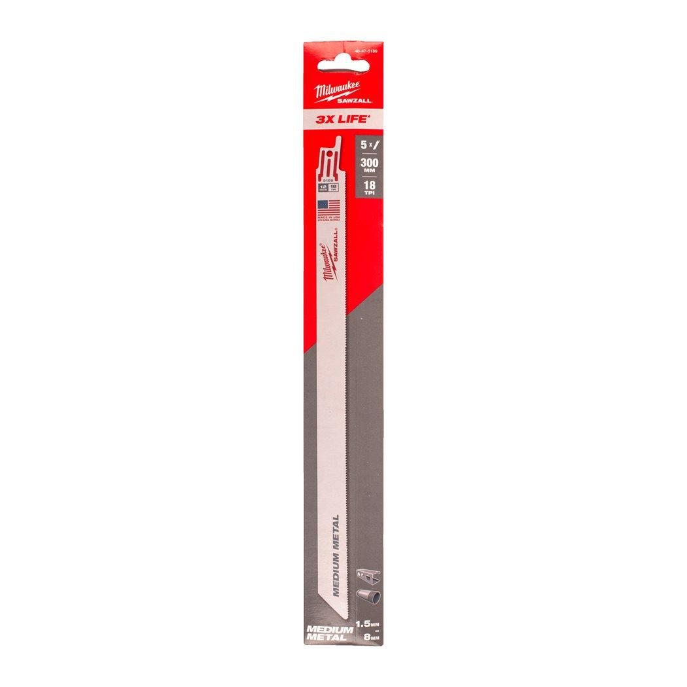

| Blade length (mm) | 300 |
| Materials suited for | Thick metal > 4 mm|Medium metal 1.5 - 4 mm|Thin metal 0.5 - 3 mm|Stainless steel|Non ferrous metal (Cu/Al)|PVC pipe |
| Max. cutting capacity metal pipe ⌀ (mm) | ⌀ 10 - 250 |
| Max. cutting capacity non-ferrous metals (mm) | 1.5 - 8 |
| Max. cutting capacity stainless steel (mm) | 1.5 - 4 |
| Max. cutting capacity steel (mm) | 1.5 - 8 |
| Pack quantity | 5 |
| Ref. No. | - |
| Article Number | 48475189 |
| EAN | 045242368310 |